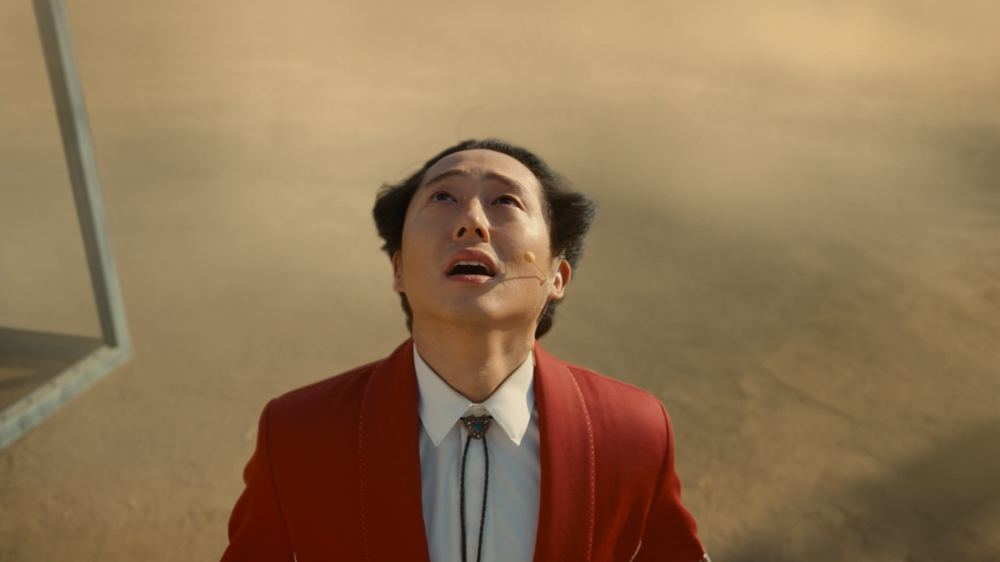
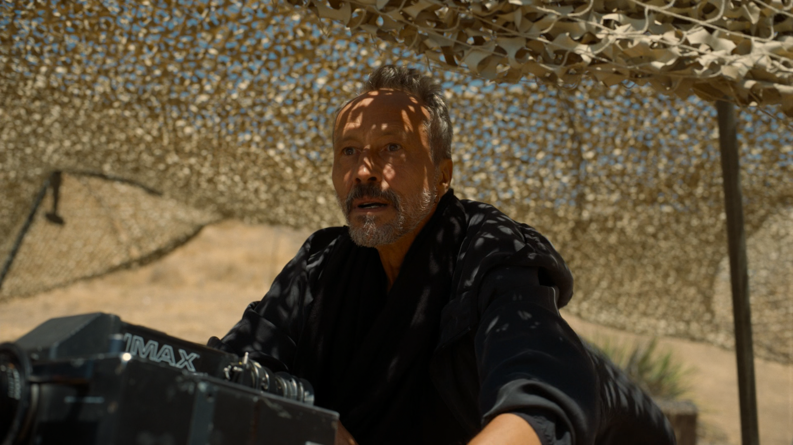
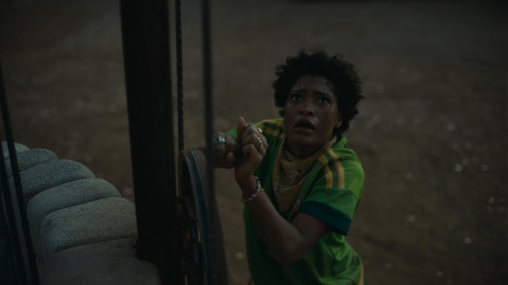

Nope 2022, a total ten out of ten
God, where to begin?
This movie is most definitely a 10/10 for me, for so SO many reasons, a big one would totally be its ability to elicit emotion.
And that's a big part of movies, the reaction the audience gets from it. Well really this idea exists for any form of art,
they make you get the feels.
Nope's goal as a thriller, is to either scare the shit out of you, or to well, thrill you!
I think this is one of the biggest draws for me with the movie, every second is engineered to thrill, confuse, and sometimes scare you.
Note, sometimes.
That's another part of Nope I like, how it often doesn't harness fear all too much.
Yeah there's a few scenes with a jumpscare or two,
but most of the time, you're met with a giant, unimaginably large, sense of
Dread
God, the movie reeks of it.
Every scene just feels so uncomfortable, and I honestly hated watching this movie for the first time.
Even in "normal" scenes everything feels off, how the characters act, less and less people being in the area, even just how bliss
things are sometimes. And the scenes where shit goes down are even worse, you hear screams howling in the distance, see a house washed
in blood and broken wedding rings, it's plain in view what's going to happen to our protagonists at some points of the movie, but we just
have to sit back and watch in horror.
Definitely a point where the dread factor starts rolling down the hill is when you see the digestion scene (at a bit after 1 hour in),
this fucking thing doesn't abide by anything we understand,
you can't train it, you can't catch it, you especially cant run away,
it tortures you in its gullet until it washes you with a thick helping of its acid, it's some unstoppable force that a movie horse trainer,
his sister, and some fucker from tesco, have to somehow kill.
This thing fills me with so much emotion, its disgusting and I hate it and how much dread it fills me with.
(Side-note, LOVE the black bars removal of this scene, honestly I've only noticed on rewatch, but it uses black bars a LOT and loves to toggle them)
Gosh, if I'd have to say, the other greatest emotion I find in this film, or motivation as I could also say, is
(sorry I have to do this twice ahah)
Resilience
I'll say it, the Indomitable human spirit goes CRAZY hard in this film.
It manages it so well with the motivations of the characters too, their motivations to keep hitting the brick wall are so fucking stupid, the losses are outweighing their gains at this point, but they're so understandable to the audience. Who doesn't want to be the first?
The first to create the perfect film

The first to get a UFO/UAP money shot and reap the rewards

The ends that these characters go to to reap these neigh fruitless actions, either motivated with something past their life, their existence, their legacy, or with the act of finally finishing what others tried and failed to do, to finish the damn job, just for them. I TOTALLY didn't cry writing this shut the fuck up.
Alright that's really all I can think of, for now.
This is the first time I've actually like, written something for myself, not just for some english class.
I will learn to use better structure :) soon :) I may even update this who knows